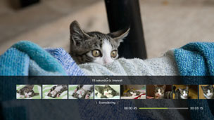
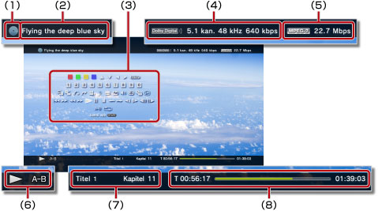

Video > Använda kontrollpanelen
Använda kontrollpanelen
Du kan utföra olika funktioner med kontrollpanelen på skärmen. Kontrollpanelen kan visas eller döljas genom att trycka på knappen  .
.
Ikonerna som visas på denna sida definieras som följande:
 |
Video som spelats in på en skrivskyddad Blu-ray-skiva (BD-skiva) |
|---|---|
 |
Video som spelats in på en överskrivningsbar BD-skiva |
 |
Video som spelats in i AVCHD-format |
 |
|
 |
Videofilm som spelats in i VR-läge på DVD-R / DVD-RW |
 |
Videofiler som sparats på hårddisken |
 |
Videofiler som sparats på lagringsmedia* |
| * |
En lämplig USB-adapter (medföljer ej) krävs för att använda lagringsmedia med vissa modeller. |
|---|
Obs!
Visst innehåll kan ha uppspelningsvillkor som förinställts av innehållsutvecklaren. I sådana fall kanske vissa alternativ inte är tillgängliga.
Röd/grön/gul/blå ikon


Utför de funktioner som motsvarar ikonen. Funktionerna som tilldelats ikonen varierar efter innehåll.
Upp/Ned/Vänster/Höger

Välj ett alternativ.
Bekräfta
Bekräfta det valda alternativet.
Sifferknappsats

Ange siffrorna.
Popup-meny
Visa pop-up-menyn.
Meny
Visa menyn.
Huvudmeny
Visa hemmenyn.
Återgå
Återgå till ett visst ställe i videofilmen.
Scensökning


Använd den här funktionen för att se miniatyrbilderna som har skapats med bestämda tidsintervall. Välj en miniatyrbild för att starta videon från just den scenen.

1. |
Använd |
|---|
 eller
eller  för att välja med vilket tidsintervall miniatyrbilderna ska skapas. Du kan välja [Kapitel] eller ett av de olika tidsintervallen.
för att välja med vilket tidsintervall miniatyrbilderna ska skapas. Du kan välja [Kapitel] eller ett av de olika tidsintervallen.2. |
Använd |
|---|
 eller
eller  för att välja miniatyrbilden för den scen du vill se. Uppspelningen börjar från den valda scenen.
för att välja miniatyrbilden för den scen du vill se. Uppspelningen börjar från den valda scenen.Tips!
- Alternativet [Kapitel] kan bara väljas för videoinnehåll som har kapitelinformation.
- Funktionen söka efter en scen kan inte användas för videoinnehåll som är kortare än en minut.
- Funktionen söka efter en scen kan inte användas för några andra typer av videoinnehåll.
- När du väljer en miniatyrbild, spelas en förhandsvisning av scenen i ca 15 sekunder.
Gå till


Spela upp filmen från ett angivet kapitel eller en angiven tidpunkt.
| Titel X | Ange titelnumret. |
|---|---|
| Kapitel X | Ange kapitelnumret. |
| XX:XX / XX:XX:XX | Ange tiden. |
Tips!
Beroende på videofilen kan det hända att du inte kan använda (Gå till).
Vinkelalternativ
Välj en av de tillgängliga visningsvinklarna för innehåll som spelats in med flera vinklar.
Ljudalternativ
Välj en av de tillgängliga ljudinställningarna för innehåll som spelats in med flera ljudspår.
Undertextalternativ
Välj ett av de tillgängliga undertextningsalternativen för innehåll som spelats in med flera undertextningsspråk.
Alternativ för undertextformat
Välj ett av de tillgängliga visningsalternativen för innehåll som spelats in med flera undertextningsstilar.
Volymkontroll
Justera volymen vid uppspelning av innehåll under  (Video). Välj en av nio nivåer.
(Video). Välj en av nio nivåer.
Tips!
- Ljudet kan förvrängas om volymnivån är för hög. Sänk nivån om detta händer.
- Inställningen kan vara avaktiverad när du använder vissa ljudenheter eller när du spelar vissa typer av ljud.
AV-inställningar
Anpassa inställningarna för utmatningen av material som spelas upp under (Video). Vilka alternativ som visas varierar beroende på materialet.
| Bildbrusreducering | Reducering av fint brus. |
|---|---|
| Blockbrusreducering | Reducerar mosaikliknande blockbrus som visas på skärmen. |
| Mosquito Noise-reducering | Ställ in för att reducera "mosquito noise" som syns på kanterna av visuella bilder. |
| Uppskalering | Inställd för uppskalerad utdata. Värdet du har ställt in visas i [Uppskalera] under  (Inställningar) > (Inställningar) >  (Videoinställningar). (Videoinställningar). |
| Videoutdataformat | Ställ in formatet för videoutdata. Välj videoutdataformat vid uppspelning av DVD- eller BD-skivor. Värdet du ställer in återspeglas i [BD/DVD-format för video utgång (HDMI)] under (Inställningar) > (Videoinställningar). |
| Y Pb / Cb Pr / Cr Supervit | Inställd för supervit visning. Supervit signal kan nu matas ut när man spelar en DVD-, BD- eller AVCHD-skiva. Det värde du anger återspeglas i [Y Pb/Cb Pr/Cr Supervit (HDMI)] under (Inställningar) >  (Skärminställningar). (Skärminställningar). |
| RGB Full Range | Inställd för RGB full range-visning. Det värde du anger återspeglas för [RGB Full Range] under (Inställningar) > (Skärminställningar). |
| Dynamic Range Control | Ställ in Dynamic Range Control. Aktivera eller avaktivera funktionen Dynamic Range Control för ditt PS3™-system medan BD- och DVD-skivor spelas som alstrar Dolby Digital-ljud. Värdet som du ställer in återspeglas i [BD / DVD Dynamic Range Control] under (Inställningar) > (Videoinställningar). |
| Ljudutdataformat | Ställ in formatet för ljudutdata. Välj formatet för ljudutdata vid uppspelning av DVD- eller BD-skivor. Det värde du ställer in återspeglas för [Utdataformat för BD/DVD-ljud (HDMI)] eller [Utdataformat för BD-ljud (optiskt digitalt)] under (Inställningar) > (Videoinställningar). |
Tidsalternativ
Du kan välja att antingen visa hur lång tid som har gått eller den återstående tiden för en titel eller ett kapitel. Alternativen varierar beroende på vilket innehåll som spelas upp.
Skärminställning
Ändra skärmläget.
| Normal | Anges när man vill visa videofilmen så att den passar skärmstorleken utan att proportionerna behöver ändras. |
|---|---|
| Zoom | Anges när man vill visa videofilmen i helskärm utan att proportionerna behöver ändras. Delar av videofilmen beskärs i överkant och underkant eller i vänster- och högerkant. |
| Helskärm | Ställ in för att visa innehållet på hela skärmen genom att ändra proportionerna och sträcka ut bilden vertikalt och horisontellt. |
| Ursprunglig | Anges när man vill visa videofilmen i ursprunglig storlek. |
Tips!
Beroende på videofilens typ kanske det inte går att växla skärmläge.
Ändra ikon
Ändra ikonen (miniatyrbild) som associeras med en videofil. Under uppspelning av videofilen, välj (Ändra ikon) när bilden du vill välja som ikon visas.
Tips!
- Beroende på videofilens typ kanske det inte går att byta ikon.
- En videofil som är kortare än två sekunder kan inte användas som ikon.
Radera
Radera videofiler.
Visa
Visa uppspelningsstatus och annan relaterad information. Informationsalternativen varierar beroende på vilket innehåll som spelas upp.

(1) |
Media |
|---|---|
(2) |
Titel |
(3) |
Kontrollpanel |
(4) |
Ljud-codec/kanalnummer/sampling-hastighet/bithastighet |
(5) |
Video-codec/bithastighet |
(6) |
Statusikon |
(7) |
Titel/kapitel |
(8) |
Spelad tid/total tid |
Föregående (Tillbaka till början)/Nästa
Gå till föregående eller nästa kapitel.
Tips!
När du spelar videofiler som sparats på lagringsmedia eller hårddisken är  (Nästa) inte tillgängligt. Om du väljer
(Nästa) inte tillgängligt. Om du väljer  (Föregående) startar uppspelningen från början av videofilen.
(Föregående) startar uppspelningen från början av videofilen.
Snabbspolning bakåt/Snabbspolning framåt
Snabbspola innehållet som spelas upp framåt eller bakåt. Varje gång du trycker på  -knappen ändras uppspelningshastigheten.
-knappen ändras uppspelningshastigheten.
Spela upp
Starta uppspelningen av innehåll.
Tips!
I de flesta fall när man spelar upp videoinnehåll som stoppats under uppspelning, fortsätter uppspelningen på det ställe där den senast avbröts.
Om du vill spela upp från början avbryter du uppspelningen genom att trycka på PS-knappen så visas XMB™-menyn. Välj ikonen och tryck på -knappen. Välj [Spela upp från början] på alternativmenyn.
Paus
Gör paus i uppspelningen.
Stopp
Stoppa uppspelningen.
Omspelning direkt/Framåt direkt
Flytta till ett ställe i videofilmen 15 sekunder bakåt eller 15 sekunder framåt.
Långsamt (bakåt)/Långsamt (framåt)
Spela upp i långsamt läge.
Bildruta bakåt/Bildruta framåt
Spela upp en ruta i taget.
Upprepa A-B
Spela upp ett angivet avsnitt upprepade gånger.
1. |
I början av det avsnitt som ska upprepas trycker du på |
|---|---|
2. |
I slutet av det avsnitt som ska upprepas trycker du på |
Tips!
Om du vill tömma upprepningsfunktionen A-B väljer du (Upprepa A-B).
Upprepa
Spela upp innehållet upprepade gånger.
Tips!
Om du vill tömma upprepningsfunktionen väljer du (Upprepa) tills [Upprepning av] visas.